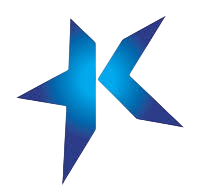

Değerli Ziyaretçimiz, bu Artırılmış Gerçeklik (AR) deneyimini yaşayabilmeniz için cihazınızın Kamera erişimine izin vermeniz zorunludur. Kamera görüntünüz yalnızca cihazınızda işlenir, sunucuya gönderilmez veya kaydedilmez.
Uygulamanın kullanım sürecindeki sorumluluk tarafınıza aittir. Aşağıdaki kutucuğu işaretleyip "Deneyimi Başlat" butonuna tıklayarak kamera erişimine onay verdiğinizi ve kullanım koşullarını kabul ettiğinizi beyan etmiş olursunuz.
Kameranızı sergi görseline doğrultun